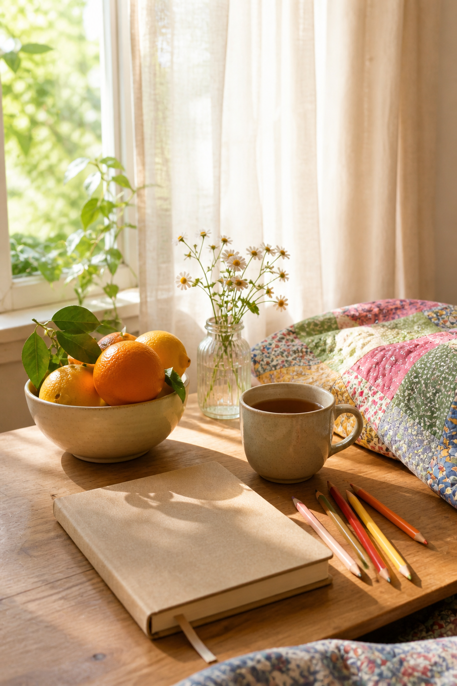

Journaling does not need to turn a difficult mood into a cheerful one. On a low-energy day, the kinder goal is simply to make contact with yourself and leave one small sign of care on the page.

Choose one color that feels possible
Do not search for the happiest color. Pick the pencil, paper scrap, or thread you can tolerate looking at today. Muted yellow, soft pink, leaf green, or quiet blue can provide a gentle starting signal.
Make one physical mark
Draw three short lines, tear one paper shape, or place a small sticker. The action should take less than a minute. Beginning with the hand rather than the mind removes the pressure to know what you want to say.
Write one accurate sentence
Try “Today feels…,” “The smallest thing I need is…,” or “I noticed….” Keep the answer private and plain. An honest neutral sentence is more useful than forced gratitude or a demand to feel better.
Add one sensory detail
Record something concrete: warm tea, cool floor, rain against glass, the smell of soap, or sunlight on fabric. Sensory language brings attention back to the present without requiring analysis.
Leave most of the page empty
White space is not unfinished. It can hold the energy you do not have today. Place the sentence and color close together, then let the rest remain quiet instead of filling it with decorative pressure.
Choose a closing action
Underline one word, tape in the paper shape, close the pencil box, or date the corner. A small closing action tells the mind the practice is complete. You do not need a conclusion or lesson.
Return without judging the page
Tomorrow you may add another line, or you may leave it untouched. The value is in having made a gentle record of one moment. If low mood persists or feels unsafe, journaling can support you but should not replace professional or personal help.
Ten minutes is enough. The page does not have to improve the day; it only has to meet you where you are and make the next small moment feel a little more held.
Image note: Some visuals in this article were created with AI and curated by Sentimentalica.